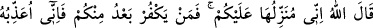
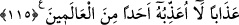

115. Allah da şöyle buyurdu: Ben onu size şüphesiz indireceğim; ama bundan
sonra içinizden kim inkâr ederse, Ben ona kâinatta hiç kimseye etmediğim azâbı
ederim!
“Allah da şöyle buyurdu: Ben” duânıza icabet ederek “onu size şüphesiz
indireceğim; ama bundan sonra” yani onun indirilmesinden sonra “içinizden kim,
inkar ederse, Ben ona” bu apaçık mûcizeyi gördükten sonra inkar etmesi sebebiyle
“kainatta hiç kimseye etmediğim azâbı ederim.” “Yani, kendi zamanlarındaki
âlemlerden hiç kimseye ya da bütün âlemlerden hiç kimseye etmediğim gibi azâb
ederim.” anlamındadır. Nitekim onlar maymun ve domuz hâline getirilmişlerdir ki,
onlardan başkası bu azâba çarptırılmamıştır.
Rivayet edilmiştir ki: Îsâ (a.s.) gusül abdesti aldı, elbisesini giydi, iki rekat namaz
kıldı, boynu bükük ve gözleri kapalı olarak dua etti. Bunun üzerine onların gözü önünde
iki bulutun arasından kırmızı bir sofra indi.
Hz. Îsâ bunun üzerine ağladı ve: “Allahım, beni şükredenlerden eyle! Allahım bu
sofrayı bütün âlemler için rahmet eyle. Onu ibret olacak bir azap ve cezâ hâline
getirme!” diye dua etti. Ardından kalkıp abdest alarak iki rekat daha namaz kıldı ve
ağladı. Sonra da sofranın üzerindeki örtüyü “Rızık verenlerin en hayırlısı olan
Allah’ın adıyla” diyerek kaldırdı.
Bir de baktı ki sofrada neler neler var. Pulu ve kılçığı olmayan, yağı damlayan, baş
tarafında tuz, kuyruk tarafında sirke, etrafında marula varıncaya kadar her türlü sebze
bulunan kızarmış bir balık ve beş çeşit çörek. Birinin üzerinde zeytin, diğerinin bal,
üçüncüsünün yağ, dördüncüsünün peynir ve sonuncusunun üzerinde de kurutulmuş et
vardı.
Bunun üzerine havarilerin başı Şem’ûn:
“Ey Ruhullah, bu dünyâ yemeği midir, yoksa âhiret yemeği mi?”diye sorunca, Hz. Îsâ:
“İkisinden de değil.” Allah onu kudretiyle benzersiz olarak yarattı. İstemiş olduğunuz bu
yemeği yeyin. Buna karşılık da şükredin ki Allah Teâlâ üzerinizdeki nimeti artırsın ve
devamlı kılsın.” dedi. Havariler dediler ki:
“Ey Ruhullah, bu mûcize içinden bize bir başka mûcize daha göstersen.” Hz. Îsâ da:
“Ey balık, Allah’ın izniyle diril.” dedi ve o balık kıpırdanıp canlandı. Sonra da “Eski
hâline dön.” dedi. Balık kızartılmış hâline geri döndü.
Sofra bu şekliyle bir gün kaldı ve ondan yiyen yedi. Daha sonra sofra uçup gitti ve o
günden sonra bir daha inmedi.